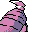

#181
Dusclops
Ghost
Its hollow body is a black hole that draws prey inside Its single eye never blinks
Base stats Total 370
HP90
Attack60
Defense110
Speed25
Special85
Details
- Species
- Beckon
- Height
- 5'03"
- Weight
- 67.5 lb
- Catch rate
- 90
- Base exp
- 147
- Growth
- Slow
Level-up moves
LevelMoveType
StartConfuse RayGhost
StartNight ShadeGhost
StartDisableNormal
Lv 9LickGhost
Lv 19Confuse RayGhost
Lv 31Night ShadeGhost
Lv 32Ice PunchIce
Lv 33ThunderpunchElectric
Lv 34Fire PunchFire
Lv 38Shadow BallGhost
TM / HM
TM01 Mega PunchTM05 Mega KickTM06 ToxicTM07 Shadow BallTM08 Body SlamTM10 Double-EdgeTM13 Ice BeamTM14 BlizzardTM15 Hyper BeamTM18 CounterTM19 Seismic TossTM26 EarthquakeTM29 PsychicTM31 MimicTM32 Double TeamTM35 MetronomeTM42 Dream EaterTM44 RestTM48 Rock SlideTM50 SubstituteHM04 StrengthHM05 Flash